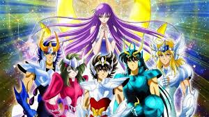

LOS CABALLEROS DEL ZODIACO
Es una serie de anime y manga creada por Masami Kurumada, Fue publicada por primera vez en 1986.
La historia se centra en un grupo de jóvenes guerreros llamados "Caballeros" que luchan para proteger a la diosa Atenea y defender la Tierra de diversas amenazas.
Los caballeros visten armaduras sagradas llamadas "Cloths", que están inspiradas en las constelaciones del zodiaco. Cada caballero posee habilidades especiales y poderes únicos relacionados con su constelación.
La serie es conocida por sus intensas batallas, su mitología rica y su enfoque en temas como la amistad, el sacrificio y el honor. Ha ganado una gran base de seguidores en todo el mundo y ha sido adaptada en varias películas, series de televisión y videojuegos.